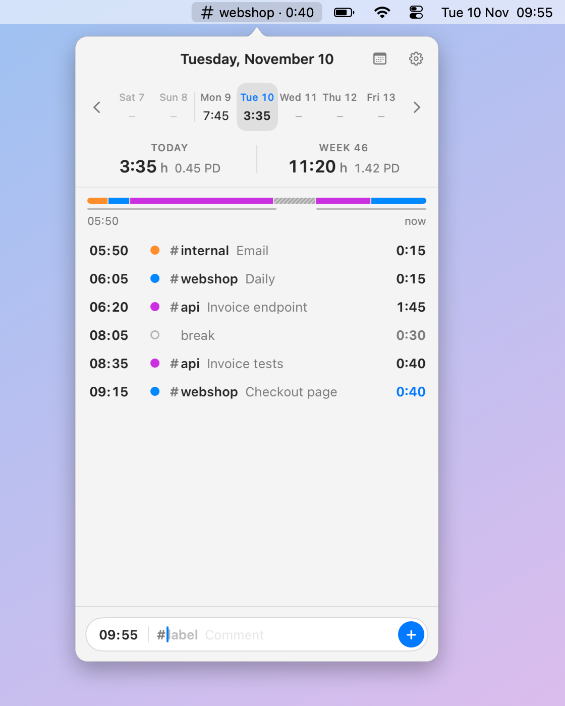
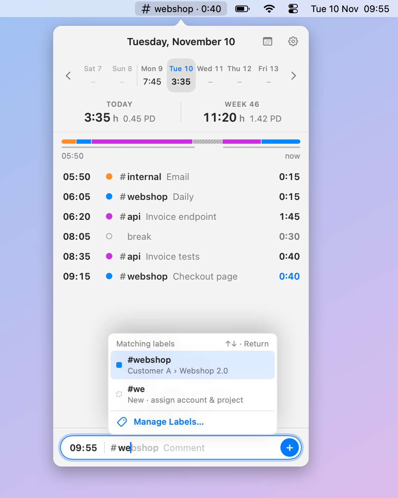
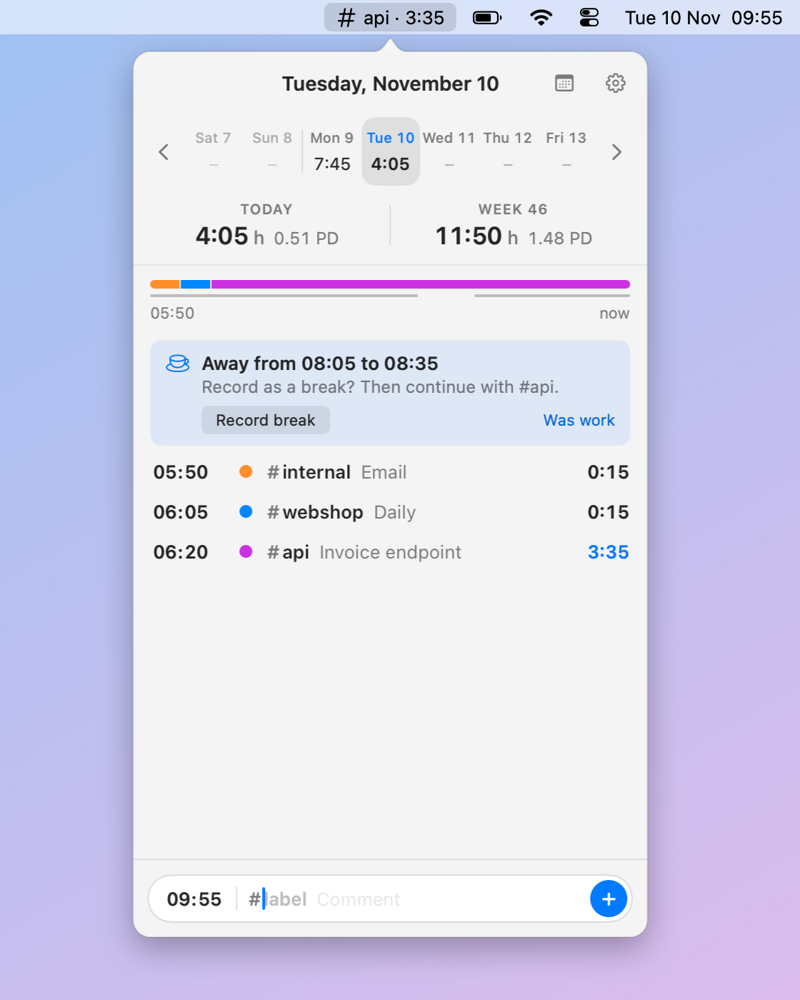
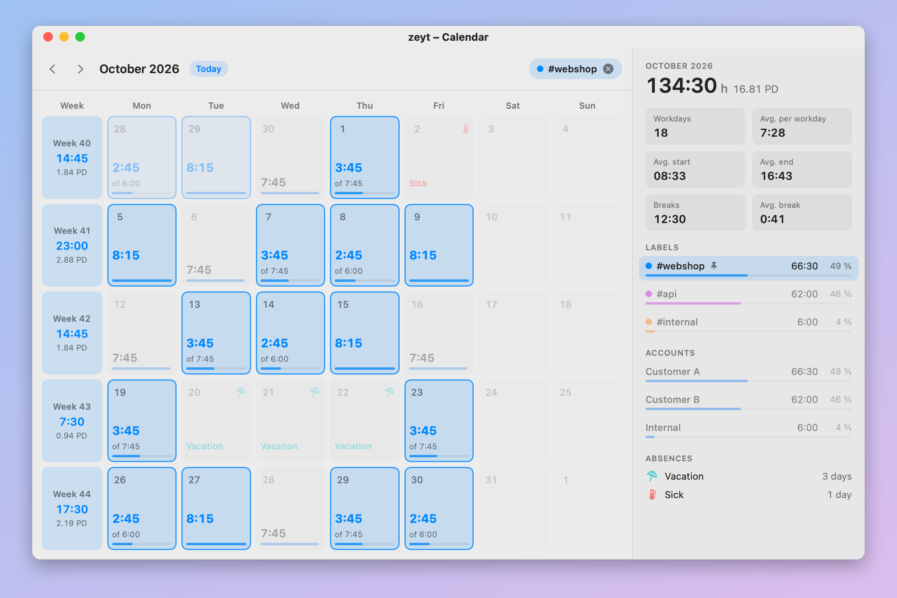
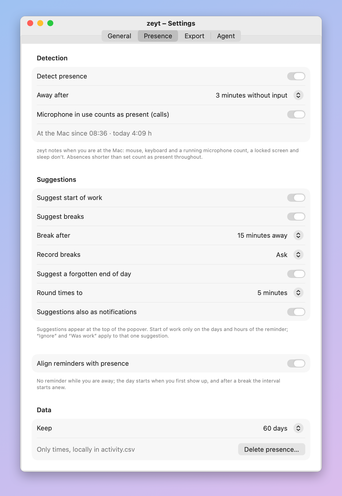
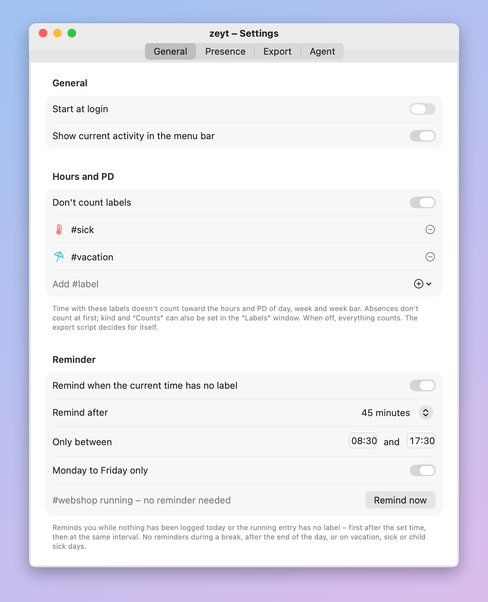
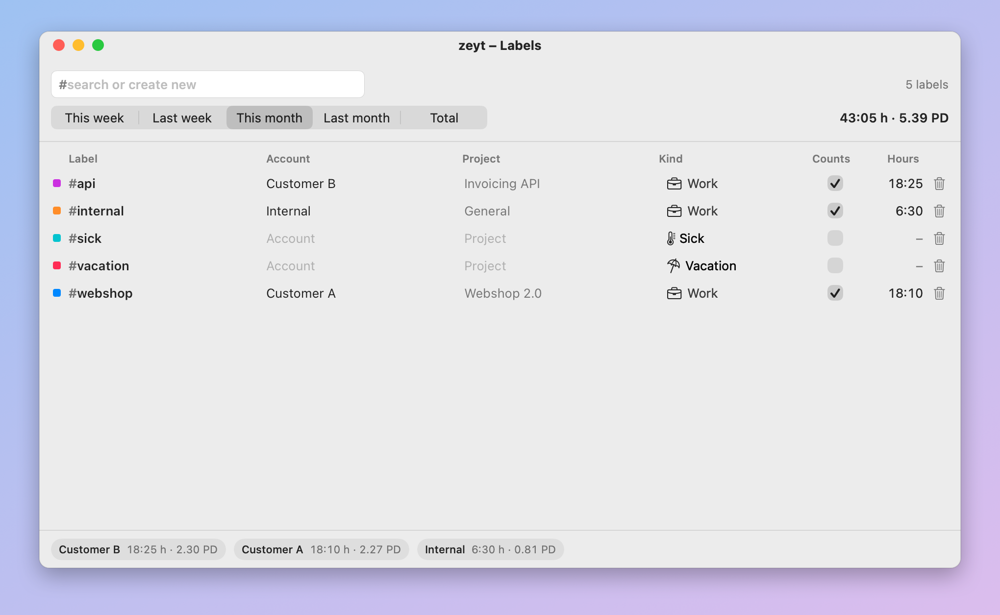
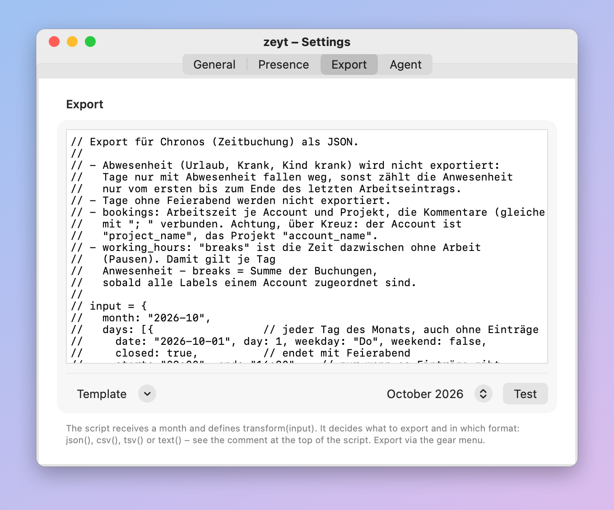

Time tracking in the macOS menu bar. Type what you do, zeyt keeps the day.
brew install --cask oberbichler/tap/zeyt
Free and open source · macOS 14 or later · Apple Silicon and Intel

Everything you need to know where the day went – and nothing else.
Type #label comment and press Return. An entry runs until the next one; delete the # for a break.
A notification when nothing runs – answer it directly, continue, take a break or end the day.
Suggests your start, breaks you were away for and a forgotten end of day. Only times are kept.
A month in calendar weeks with hours per day, plus the month's figures per label and account.
Account and project per label, vacation and sick days, and which labels count toward the hours.
Your own JavaScript turns a month into JSON, CSV or text. Templates included.
A local REST API lets agents like Claude Code read and edit your entries, answer suggestions and run the export – with your own instructions.
Copy a day and paste it into one or many others, also as plain text.
A plain CSV file on your Mac. No account, no cloud, no tracking.
In English, German, French, Spanish, Italian, Dutch, Polish and Portuguese.







With Homebrew, updates come with brew upgrade.
brew install --cask oberbichler/tap/zeyt
zeyt is signed ad hoc and not notarized; the cask removes the quarantine attribute. If you download the ZIP from Releases instead, run:
xattr -dr com.apple.quarantine /Applications/zeyt.app
Your data lives in ~/Library/Application Support/zeyt: log.csv with one line per entry,
labels.json and activity.csv.